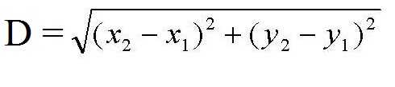

Restantes:
1.4
Usuário:
Notas:
Q1: 100
Q2: 81
Q3: 100
Q4: 100
Q5: 100
Q6: 100
Q7: 100
Q8: 100
Q9: 100
Q10: 100
Q11: 100
Q12: 47.6
Q13: 100
Q14: 100
Q15: 100
Q16: 90
Q17: 100
Q18: 25.9
Q19: 100
Q20: 100
Q21: 90
Q22: 81
Q23: 90
Q24: 100
Q25: 90
Q26: 97.8
Q27: 100
GCC224 - IALG Turmas 10/14 Lista de Ordenação
Prova Aberta Até: 27/03/2017 16:00:00
Número Máximo de Tentativas: 6
Atenuação da Nota por Tentativa (multiplicativa): 0.9
Nota Máxima por Tentativa:
- 100
- 90
- 81
- 72.9
- 65.61
- 59.049
Descrição:
QUESTÕES
Questão 1: Ordenação - Bubble-sort
Você deverá fazer um programa que recebe um vetor de inteiros V de N posições e o ordena. Para ordenar este vetor, você deverá usar o método Bubble Sort.
Entradas:
- Tamanho N do vetor.
- Os N elementos do vetor V.
Saídas:
- Vetor V ordenado.
Exemplo de Entrada:
5 7 8 5 3 6
Exemplo de saída:
3 5 6 7 8
Peso: 1
Última tentativa: 21/02/2017 17:31:22
Tentativas: 1 de 6
Nota (0 a 100): 100
Status ou Justificativa de Nota: Nenhum erro encontrado.
Tentativas de Resposta:
Questão 2: Vetores - Selection Sort e Busca Binária. (2)
Implemente o algoritmo de ordenação selection sort em um vetor de N posições, procurando o menor valor do vetor e o coloca na última posição. Em seguida ele procura o segundo menor valor e o coloca na penúltima posição, assim sucessivamente até que o vetor esteja ordenado de forma decrescente (Imprima cada passo dessa ordenação).
Feito isso, receba o número que o usuário deseja buscar no vetor e faça uma busca binária imprimindo o número de iterações (quantas vezes o algoritmo da busca binária foi executado, repetiu) e a posição no vetor do número buscado, imprimindo -1 caso não seja encontrado.
Obs: Apenas imprima quando houver a troca de números!
-
Entradas:
int n- Tamanho do vetor que será ordenado.int vetor[n]- Vetor que será ordenado.int busca- Número que será buscado no vetor.
-
Saídas:
- Cada passo da ordenação. Ou seja, os valores do vetor à cada passo da ordenação.
- Posição no vetor do elemento buscado
- Número de iterações da busca binária. Ou seja, número de vezes que o laço foi executado.
Exemplos de entradas e saídas
Entradas:
5 4 1 7 2 3 3
Saídas:
4 3 7 2 1 4 7 3 2 1 7 4 3 2 1 2 1
Peso: 1
Última tentativa: 27/02/2017 00:23:11
Tentativas: 3 de 6
Nota (0 a 100): 81
Status ou Justificativa de Nota: Nenhum erro encontrado.
Tentativas de Resposta:
Questão 3: Ordenação - vetores - Ordena até posição
Entradas:
int n- tamanho do vetorint vetor[n]- vetor de tamanho n.int pos- posição até onde o vetor deve ser ordenado.
Saídas:
int vet[n]
Exemplos de Entrada e Saída:
Entradas:
5
5 4 3 2 1
2
Saídas:
3 4 5 2 1
Peso: 1
Última tentativa: 27/02/2017 11:22:15
Tentativas: 1 de 6
Nota (0 a 100): 100
Status ou Justificativa de Nota: Nenhum erro encontrado.
Tentativas de Resposta:
Questão 4: Ordenação - Insertion Sort Passo a Passo
Implemente o algoritmo de ordenação insertion sort que percorre o vetor do inicio ao fim e coloca cada valor em sua correta posição a esquerda desse valor. Assim o vetor sera percorrido da posição 1 (segunda posição) ate a última posição. Cada passo do algoritmo devera ser imprimido, ou seja, a cada iteração do loop principal o estado atual do vetor devera ser impresso.
Entradas:
- Tamanho do vetor que será ordenado.
- Os diversos valores para ordenação.
Saídas:
- Cada passo da ordenação. Ou seja, os valores do vetor a cada inserção feita.
Exemplo de entradas:
6 4 7 2 3 8 6
Exemplo de saídas:
4 7 2 3 8 6 2 4 7 3 8 6 2 3 4 7 8 6 2 3 4 7 8 6 2 3 4 6 7 8
Peso: 1
Última tentativa: 27/02/2017 11:33:45
Tentativas: 1 de 6
Nota (0 a 100): 100
Status ou Justificativa de Nota: Nenhum erro encontrado.
Tentativas de Resposta:
Questão 5: Arquivos - Notas dos Alunos (registros e ordenação)
Faça um programa que crie um vetor com 3 posições. Cada posição do vetor deve conter um registro. Esse registro, chamado de DadosAluno, deve conter:
- Primeiro nome do aluno
- Número de matrícula do aluno (
int) - Vetor as três notas do aluno (
float)
Após a leitura dos dados, o vetor deve ser ordenado pela média das notas e salvo no arquivo alunos.txt.
Entradas:
DadosAluno alunos [3]- Vetor de três alunos
Saídas:
- Nomes e números de matrícula ordenados pelas médias dos alunos
Exemplos de Entradas e Saídas:
Entradas:
Lucas 201310123 98.0 99.9 100.0 Ana 201410123 70.0 60.0 0.5 Andre 201510123 63.8 100.0 7.5
Saídas do Arquivo:
Ana 201410123 Andre 201510123 Lucas 201310123
Peso: 1
Última tentativa: 27/02/2017 12:10:49
Tentativas: 1 de 6
Nota (0 a 100): 100
Status ou Justificativa de Nota: Nenhum erro encontrado.
Tentativas de Resposta:
Questão 6: Modularização - Registro Ordenado
Faça um programa que lê dados de vários funcionários e depois escreve um relatório sobre eles. O dados de cada funcionário devem ser armazenados em registros.
Entradas:
- O número de funcionários.
- Os dados de cada funcionário:
- O código do funcionário (número inteiro).
- O nome do funcionário (sem espaços).
- O valor que o funcionário recebe por hora (número real).
Deve existir uma função para ordenar os funcionários pelo código (ordem crescente). A ordenação só pode ser feita por algum dos métodos vistos em aula.
Deve existir uma função que calcula o salário mensal de um funcionário. Essa função deve ser usada para calcular o salário de todos os funcionários. Sabe-se que todo funcionário nesta empresa trabalha 8 horas por dia, 20 dias por mês.
Saídas:
- Os seguintes dados dos funcionários, em ordem crescente de código do funcionário:
- código do funcionário
- nome do funcioário
- salário mensal do funcionário
O planejamento de passagem de parâmetros é parte importante da nota. Todas as operações de leitura ou de escrita devem ser realizadas na função principal. O uso de registros deve proporcionar organização para os dados da memória.
Exemplo de entradas:
4 24 Lucas 8.50 11 Mateus 16.00 18 Raphael 21.50 10 Paulo 35.00
Exemplo de saídas:
10 Paulo 5600 11 Mateus 2560 18 Raphael 3440 24 Lucas 1360
Peso: 1
Última tentativa: 27/02/2017 12:28:33
Tentativas: 1 de 6
Nota (0 a 100): 100
Status ou Justificativa de Nota: Nenhum erro encontrado.
Tentativas de Resposta:
Questão 7: Matriz - Ordenar Linhas Pares Crescente, Ímpares Descrescente
Faça um programa que receba uma matriz quadrada (NxN) e a preencha. Feito isso, ordene as linhas pares em ordem crescente e as linhas ímpares em ordem decrescente. Imprima a nova matriz.
Entradas:
int n- Tamanho da matriz quadrada.int mat[n][n]- Valores que preencherão a matriz.
Saídas:
- Matriz ordenada de forma crescente nas linhas pares e decrescente nas linhas ímpares (
int).
Exemplos de Entradas e Saídas:
Entradas:
4 12 42 3 1 6 14 53 32 44 31 26 52 7 8 9 2
Saídas:
1 3 12 42 53 32 14 6 26 31 44 52 9 8 7 2
Peso: 1
Última tentativa: 27/02/2017 15:03:52
Tentativas: 1 de 6
Nota (0 a 100): 100
Status ou Justificativa de Nota: Nenhum erro encontrado.
Tentativas de Resposta:
Questão 8: Registros - Amigos (ordenação)
Faça um programa que processa um cadastro de um grupo de 5 amigos com a idade e a quantidade de dinheiro que eles possuem. Ambas as informações são números inteiros e devem compor um registro que representa um amigo.
O programa deve ler os dados de 5 amigos e ordenar esses dados em função da idade de cada um, do mais velho ao mais novo.
Depois, o programa deve ler uma quantia e escrever a idade de cada amigo que possua exatamente a quantia buscada. Caso nenhum amigo tenha aquela quantia, o programa deverá escrever -1.
Em seguida, o programa deve escrever a média das idades de todos amigos e a quantidade total em dinheiro.
Entradas:
- Dados de 5 amigos (para cada um, a idade precede a quantia de dinheiro).
- Valor a ser buscado.
Saídas:
- A idade de cada amigo que possui a quantia procurada (ou -1 se nenhum amigo possui tal quantia).
- Média de todas as idades.
- Soma de todas as quantias de dinheiro.
Exemplo de entrada: 18 15 22 20 17 10 19 15 20 25 15 Exemplo de saída: 19 18 19.2 85
Peso: 1
Última tentativa: 27/02/2017 15:25:01
Tentativas: 1 de 6
Nota (0 a 100): 100
Status ou Justificativa de Nota: Nenhum erro encontrado.
Tentativas de Resposta:
Questão 9: Ordenação - Implementando o SelectionSort.
Crie um programa que implemente uma versão alterada do método de ordenação SelectionSort que ordene o vetor inversamente.
Entradas:
- Tamanho do vetor(int).
- Números presentes no vetor(int).
Saídas:
- Vetor ordenado de maneira decrescente.
Exemplo de Entrada:
5 10 15 3 4 6
Exemplo de Saída:
15 10 6 4 3
Peso: 1
Última tentativa: 27/02/2017 15:33:34
Tentativas: 1 de 6
Nota (0 a 100): 100
Status ou Justificativa de Nota: Nenhum erro encontrado.
Tentativas de Resposta:
Questão 10: Modularização - Ordenar pontos pela distância
Visão geral do problema
Faça um programa que ordena pontos no plano cartesiano em função da distância a um ponto de referência.
Seu programa deve definir um registro que representa o tipo ponto, deve ter um módulo para calcular a distância entre dois pontos, um módulo para ordenar pontos e o módulo principal, que faz toda a entrada e saída de dados. Outros módulos são opcionais. A ordenação deve ser feita por algum dos métodos de ordenação vistos em aula.
Sabe-se que dados dois pontos A = (x1,y1) e B = (x2,y2), a distância entre eles é a raiz quadrada da soma das diferenças das coordenadas ao quadrado.
Fórmula: 
Para calcular a raiz quadrada em C++, use a função sqrt da biblioteca cmath.
Dados de entrada
O programa deve ler, em ordem:
- o ponto de referência,
- um número inteiro que indica a quantidade de pontos a serem ordenados,
- os vários pontos a serem ordenados, cada um dado por duas coordenadas que são números reais.
Dados de saída
O programa deve escrever os pontos ordenados do mais próximo ao ponto de referência até o mais distante. Para cada ponto, o programa deve escrever:
- A distância até o ponto de referência,
- a coordenada x do ponto,
- a coordenada y do ponto.
Exemplos de entrada e saída
Entrada: 12.3 4.1 3 -1.9 4.1 -0.1 -3.8 22.1 5.9
Saída: 9.96393 22.1 5.9 14.2 -1.9 4.1 14.7027 -0.1 -3.8
Peso: 1
Última tentativa: 27/02/2017 15:51:46
Tentativas: 1 de 6
Nota (0 a 100): 100
Status ou Justificativa de Nota: Nenhum erro encontrado.
Tentativas de Resposta:
Questão 11: Ordenação - Estratégia Pokémon Go
Um fã do jogo Pokémon Go resolveu criar um programa para definir quais serão os próximos pokémons que ele tentará pegar. Ele conseguiu um jeito de gerar um arquivo texto (dados.txt) contendo na primeira linha a quantidade de pokémons e depois, em cada linha, as seguintes informações de um pokémon: nome, tipo e distância para sua posição atual. A ideia é que o usuário informe na entrada padrão o tipo de pokémon que quer pegar e a quantidade N de pokémons desse tipo e o programa, a partir dos dados do arquivo, salve em um arquivo texto (pokemon.txt) os nomes dos N pokémons daquele tipo mais próximos de sua posição atual (em ordem crescente de distância).
Observações: considere que não existem distâncias repetidas e também que sempre existirá pokémons suficientes para a quantidade N passada pelo usuário.
Entradas (arquivo dados.txt):
- Quantidade de pokémons do arquivo.
- Depois, em cada linha: nome, tipo e distância (inteiro) de um pokémon para a posição atual do jogador.
Entradas (entrada padrão):
- Tipo de pokémon que o jogador quer pegar.
- Quantidade N de pokémons que o jogador quer pegar.
Saídas (arquivo pokemon.txt):
- Nomes dos N pokémons mais próximos, do tipo passado, em ordem crescente de distância.
Exemplo de Entrada (arquivo dados.txt):
10 Bulbasaur Planta 8 Charmander Fogo 9 Squirtle Agua 13 Pikachu Eletrico 10 Chikorita Planta 3 Treecko Planta 4 Cyndaquil Fogo 7 Torchic Fogo 5 Totodile Agua 6 Mudkip Agua 11
Exemplo de Entrada (entrada padrão):
Fogo 2
Exemplo de Saída (arquivo pokemon.txt):
Torchic Cyndaquil
Peso: 1
Última tentativa: 27/02/2017 21:48:20
Tentativas: 1 de 6
Nota (0 a 100): 100
Status ou Justificativa de Nota: Nenhum erro encontrado.
Tentativas de Resposta:
Questão 12: Ordenação - Magos e Dragões
Em seus 2500 anos de vida, Merlin aprendeu uma grande quantidade de feitiços poderosos. Dessa forma, ele se tornou apto a enfrentar um terrível dragão que está destruindo o reino. Entretanto, Merlin conhece tantos feitiços que a tarefa de escolher quais serão usados em uma eventual batalha se tornou bastante árdua. Por isso, ele pediu que você o ajudasse a escolher quais magias utilizar em um eventual confronto contra o dragão.
Em um confronto, um mago deve invocar exatamente K feitiços, nem mais, nem menos. Merlin conhece N feitiços. Cada feitiço tem um poder representado por um valor inteiro Fi. Todos os feitiços possuem poderes diferentes, i.e., não há dois feitiços com exatamente o mesmo poder. O valor do ataque do mago será o produto dos poderes dos K feitiços escolhidos. Como o dragão é muito forte, Merlin pretende utilizar a combinação de feitiços que irá lhe dar o maior ataque possível. Dado K, sua tarefa é informar quais feitiços Merlin deve utilizar em seu confronto. Tome muito cuidado! Magia é algo muito perigoso. Existem feitiços malignos com poder negativo (Fi < 0).
Note que podem existir mais de um conjunto de feitiços que gerem um ataque máximo. Nesse caso, Merlin deseja aquele cuja soma dos Fi é máxima. Não é necessário usar os mesmo nomes do enunciado.
Entradas:
- O número de feitiços que Merlin conhece (N).
- O número de feitiços que Merlin irá usar em seu confronto (K, 1 ≤ K ≤ N).
- N inteiros únicos Fi, indicando a força do i-ésimo feitiço. Se i != j, então Fi != Fj, para todo i e j.
Saídas:
- K inteiros indicando os poderes Fi das magias que serão usados, em ordem crescente.
- O valor total do ataque de Merlin (produtório das forças dos feitiços usados).
Exemplos:
- Entrada:
3 2 -1 3 5
Saída:3 5 15
- Entrada:
4 2 -3 -4 3 2
Saída:-4 -3 12
Peso: 1
Última tentativa: 01/03/2017 19:20:58
Tentativas: 1 de 6
Nota (0 a 100): 47.6
Status ou Justificativa de Nota: O programa não resolve todas as instâncias do problema.
Tentativas de Resposta:
Questão 13: Arquivo - Alfabeto (ordenação)
Faça um programa que receba de um arquivo "entrada.txt" algumas letras do alfabeto (maiúsculo) em ordem aleatória e ordene-o. Feito isso, salve o resultado em outro arquivo "saida.txt".
Entradas:
- Alfabeto desordenado com no máximo 26 letras e sem repetição.
Saídas:
- Alfabeto ordenado.
Exemplos de Entradas e Saídas:
Entradas do Arquivo:
E F W B G H I K L M P Q R S D T U Z V Y
Saídas do Arquivo:
B D E F G H I K L M P Q R S T U V W Y Z
Peso: 1
Última tentativa: 28/02/2017 00:47:58
Tentativas: 1 de 6
Nota (0 a 100): 100
Status ou Justificativa de Nota: Nenhum erro encontrado.
Tentativas de Resposta:
Questão 14: Ordenação - K menores
Você deverá fazer um programa que recebe um vetor de inteiros V de N posições e um inteiro K. Seu programa deverá então mostrar os K menores elementos do vetor, em ordem não-decrescente.
Entradas:
- Tamanho N do vetor.
- Os N elementos do vetor V.
- Inteiro K.
Saídas:
- Os K menores elementos do vetor, em ordem não decrescente.
Exemplo de Entrada:
5 7 8 5 3 6 2
Exemplo de saída:
3 5
Exemplo de Entrada:
6 4 8 7 9 6 3 3
Exemplo de saída:
3 4 6
Peso: 1
Última tentativa: 28/02/2017 00:53:54
Tentativas: 1 de 6
Nota (0 a 100): 100
Status ou Justificativa de Nota: Nenhum erro encontrado.
Tentativas de Resposta:
Questão 15: Matriz - Ordenação em N
Faça uma ordenação de uma matriz quadrada, do número menor para o maior em forma de N, ou seja, a primeira coluna (da última linha a primeira) , diagonal primária e última coluna (da última linha a primeira), ignorando os outros elementos.
Obs: A ordenação deve ser constante, sendo o primeiro elemento o menor e o último o maior.
Entradas:
int n- Tamanho da matriz quadradaint mat[n][n]- Matriz que deve ser ordenada
Saídas:
- Matriz ordenada
Exemplos de Entradas e Saídas:
Entradas:
4 12 11 10 9 5 6 7 8 1 2 3 4 16 15 14 13
Saídas:
5 11 10 16 4 6 7 13 3 2 8 12 1 15 14 9
Peso: 1
Última tentativa: 28/02/2017 01:51:01
Tentativas: 1 de 6
Nota (0 a 100): 100
Status ou Justificativa de Nota: Nenhum erro encontrado.
Tentativas de Resposta:
Questão 16: Registros - Clientes (ordenação)
Faça um programa que cadastre quantos clientes o usuário desejar, recebendo o código (número inteiro) e o saldo (número real) do cliente. Quando o usuário digitar -1 no campo do código encerrará o cadastramento. Não será necessário armazenar mais do que 100 clientes. Cada cliente deve ser representado por um registro.
Feito o cadastro dos clientes, ordene os clientes pelo saldo, de forma crescente. É obrigatório usar um dos algoritmos de ordenação ensinados no curso.
Depois, leia o valor de um imóvel e escreva os códigos dos clientes que tem condições de fazer a compra. Se nenhum cliente for cadastrado ou não tem condições de fazer a compra, escreva -1.
Entradas:
- Dados dos clientes, terminados pelo valor -1. Em cada cliente, o código precede o saldo.
- Valor do produto que o banco verificará a compra.
Saídas:
- Código e saldo dos clientes que podem fazer a compra.
Exemplo de entradas:
729 2500 323 1450.50 654 800 983 670 123 1444.70 -1 1000
Exemplo de saídas:
123 1444.70 323 1450.50 729 2500
Peso: 1
Última tentativa: 28/02/2017 02:15:17
Tentativas: 2 de 6
Nota (0 a 100): 90
Status ou Justificativa de Nota: Nenhum erro encontrado.
Tentativas de Resposta:
Questão 17: Ordenação - Mediana
Em estatística, a mediana é a medida de tendência central, ou seja, metade dos valores são menores que a mediana e metade são maiores que ela. Caso a quantidade de informações seja par, a mediana é a média simples dos dois valores medianos.
Faça um programa que calcula a mediana de um conjunto de valores.
A entrada de dados é composta de vários números positivos. Um número negativo na entrada indica o final dos valores.
Exemplo de entrada: 4.4 5.1 1.2 9.3 -1 Exemplo de saída: 4.75
Peso: 1
Última tentativa: 28/02/2017 02:42:25
Tentativas: 1 de 6
Nota (0 a 100): 100
Status ou Justificativa de Nota: Nenhum erro encontrado.
Tentativas de Resposta:
Questão 18: Ordenação - Classificando Músicas (arquivo, subprogramas, registro)
Um programa gerou um arquivo texto com dados sobre suas músicas. Agora você quer ordenar as músicas, tentando colocar as que você gosta mais no início da lista e as que você gosta menos no final. Cada música tem uma nota dada por você mesmo, que é um número entre 1 e 5. Como muitas músicas tem a mesma nota, você vai usar critérios de desempate. Quando duas músicas têm a mesma nota, a que você gosta mais deve ser aquela que foi interrompida menos vezes, em relação à quantas vezes foi tocada. Se o empate persistir, a melhor música é aquela que você ouviu mais vezes.
Faça um programa que lê dados das musicas do arquivo "dados-musicas.txt" e escreve os mesmos dados, no mesmo formato, no arquivo "musicas-ordenadas.txt", em ordem, da que você gostar mais para a que você gosta menos.
Para a ordenação, você deve implementar um dos métodos de ordenação vistos em aula, porém o uso do BubbleSort é proibido.
Seu programa deve ter no mínimo 3 subprogramas além do subprograma principal. Seu professor irá verificar se os subprogramas estão bem feitos e avaliar de acordo com as aulas dele. Os subprogramas não podem estar lá só para existirem, eles devem contribuir para dividir o problema em subproblemas mais simples, com parâmetros e seus métodos de passagem bem escolhidos, sem misturar interface com processamento.
As músicas devem ser representadas por registros, com campos bem escolhidos (informações que caracterizam uma música) conforme critério do seu professor.
O professor Bruno Schneider irá avaliar também o uso de nomes significativos e endentação.
Entradas:
Cada linha do arquivo tem os dados de uma música. Não existe nenhum número no arquivo indicando quantas músicas são, mas o total nunca será superior a 400. Cada linha tem os dados a seguir e existe um único espaço em branco entre os dados de uma música.
- A nota dada para a música (um número inteiro no intervalo [1,5]).
- O número de vezes que você ouviu a música.
- O número de vezes que você já interrompeu a música.
- O nome da música (não mais do que 200 caracteres, espaços são comuns em nomes de música).
Saídas:
Os mesmos dados de entrada, no mesmo formato, com as músicas ordenadas da que você gosta mais para a que você gosta menos.
Exemplo de Entrada:
5 40 4 Sweet Dreams 4 31 2 Going Under 2 20 4 I Ran (So Far Away) 3 41 10 She Drives Me Crazy 4 20 0 Nowhere Fast
Exemplo de Saída:
5 40 4 Sweet Dreams 4 31 2 Going Under 4 20 0 Nowhere Fast 3 41 10 She Drives Me Crazy 2 20 4 I Ran (So Far Away)
Peso: 1
Última tentativa: 28/02/2017 20:15:35
Tentativas: 3 de 6
Nota (0 a 100): 25.9
Status ou Justificativa de Nota: O programa não resolve todas as instâncias do problema.
Tentativas de Resposta:
Questão 19: Entrega de Pizzas (Registro)(Ordenação)
Uma pizzaria precisa entregar mais pizzas que estava planejando. Entretanto, para agilizar as entregas, seu motoboy atenderá somente os N clientes mais próximos da pizzaria. Como saída, o programa deverá retornar a soma do valor das pizzas nos N clientes mais próximos da pizzaria.
Lembre: N é somente uma porção de clientes de um total de clientes que serão fornecidos na entrada. Todos os vetores devem ser alocados dinamicamente.
Para cada cliente, a pizzaria possui os seguintes dados:
Nome do cliente.Coodenada x do cliente,
Coordenada y do cliente.
Valor da pizza.
Para cada cliente, deverá ser criado um registro com os dados acima, e a ordenação deverá ser feita usando o algoritmo Quicksort. Não haverá clientes com distância repetida.
Dica: A distância entre dois pontos pode ser calculado pela forma: sqrt [(x1-x2)^2 + (y1-y2)^2]
Entradas:
- Número de clientes que serão atendidos
- Coordenada x da pizzaria
- Coordenada y da pizzaria
- Número total de clientes
- Nome cliente 1
- Coordenada x do cliente 1
- Coordenada y do cliente 1
- Valor da pizza do cliente 1
- Nome cliente 2
- Coordenada x do cliente 2
- Coordenada y do cliente 2
- Valor da pizza do cliente 2
- ...
Saídas:
- Soma do valor das pizzas dos N clientes mais próximos da pizzaria
Exemplo de Entrada:
2 5 5 3 Joao 10 5 22.50 Lucas 15 30 32.00 Maria 20 10 21.00
Exemplo de Saída:
43.50
Peso: 1
Última tentativa: 03/03/2017 20:26:41
Tentativas: 1 de 6
Nota (0 a 100): 100
Status ou Justificativa de Nota: Nenhum erro encontrado.
Tentativas de Resposta:
Questão 20: Ordenação - Bubble Sort detalhado
Como forma de facilitar o ensino dos métodos de ordenação, um professor resolveu fazer um programa que mostrasse o funcionamento do Bubble Sort passo a passo. A ideia é que a cada comparação realizada pelo método, o vetor seja impresso destacando-se os elementos que estão sendo comparados e, quando ocorre uma troca, o vetor é exibido novamente mostrando os elementos que serão trocados. Para isso será necessário criar um programa que tenha:
- Um subprograma que exibe um vetor de inteiros com os elementos separados por tabulações. Além disso, ele deve receber por parâmetro as posições de dois elementos e um booleano indicando se eles serão trocados ou não. Se eles serão trocados deve ser impresso " t" logo após os dois elementos, caso contrário, deve ser impresso " *". Para a última impressão (sem marcas), você pode usar um índice inválido, evitando imprimir tanto os asteriscos quanto os " t".
- Um subprograma com a implementação do Bubble Sort (para vetor de inteiros), que utilize adequadamente o subprograma anterior. Obs: as chamadas devem ser feitas antes dos elementos serem trocados, mas já indicando se serão trocados ou não.
- No subprograma principal deve ser pedido ao usuário a quantidade de elementos e os elementos do vetor.
- Não deve haver nenhuma operação de escrita fora do subprograma de exibição do vetor.
Dica: faça a implementação de forma incremental. Ou seja, primeiro implemente o método Bubble Sort comum e faça um subprograma para apenas exibir o vetor normalmente. Depois altere o subprograma conforme o enunciado e o utilize no método de ordenação.
Entradas:
- Quantidade de números do vetor.
- Os números do vetor a ser ordenado.
Saídas:
- Os passos de ordenação do Bubble Sort conforme o enunciado.
- Uma última exibição do vetor sem destacar elementos (mas ainda assim usando o mesmo subprograma).
Exemplo de Entrada:
6 4 8 2 9 5 0
Exemplo de Saída:
4 * 8 * 2 9 5 0 4 8 t 2 t 9 5 0 4 2 8 * 9 * 5 0 4 2 8 9 t 5 t 0 4 2 8 5 9 t 0 t 4 t 2 t 8 5 0 9 2 4 * 8 * 5 0 9 2 4 8 t 5 t 0 9 2 4 5 8 t 0 t 9 2 * 4 * 5 0 8 9 2 4 * 5 * 0 8 9 2 4 5 t 0 t 8 9 2 * 4 * 0 5 8 9 2 4 t 0 t 5 8 9 2 t 0 t 4 5 8 9 0 2 4 5 8 9
Peso: 1
Última tentativa: 04/03/2017 02:08:55
Tentativas: 1 de 6
Nota (0 a 100): 100
Status ou Justificativa de Nota: Nenhum erro encontrado.
Tentativas de Resposta:
Questão 21: Operação Merge Sobre Três Vetores
Você deverá fazer um programa que lê do arquivo "entrada.txt" três vetores de inteiros v1, v2 e v3. O arquivo conterá o tamanho do primeiro vetor N1 e os valores do vetor v1, o tamanho do segundo vetor N2 e os valores do vetor v2 e finalmente o tamanho do terceiro vetor N3 e os valores do mesmo (v3). Esses vetores já estão ordenados. Você deve criar um novo vetor que será a junção dos três e estará também ordenado. Para isso, a operação MERGE, utilizada no MERGESORT deverá ser utilizada, modificando-se a versão padrão para a entrada de três vetores. O resultado deve ser salvo no arquivo "saida.txt", que conterá o conteúdo dos três vetores, mas ordenados pela operação MERGE.
OBS: Os vetores devem ser criados com alocação dinâmica e com o tamanho correto do vetor.
Exemplo de Entrada (arquivo "entrada.txt"):
5 7 15 18 31 33 3 5 10 22 4 1 2 3 4
Exemplo de saída (arquivo "saida.txt"):
1 2 3 4 5 7 10 15 18 22 31 33
Peso: 1
Última tentativa: 05/03/2017 14:46:11
Tentativas: 2 de 6
Nota (0 a 100): 90
Status ou Justificativa de Nota: Nenhum erro encontrado.
Tentativas de Resposta:
Questão 22: Ordenação - Ordenar Produtos (registros, modulos)
Faça um programa que lê dados de vários produtos, ordena-os e escreve aqueles que estiverem dentro de uma faixa de preços.
Inicialmente o programa deverá ler a quantidade de produtos que deve ser lida. Cada produto deve ser representado por um registro que tem identificador (número inteiro), descrição (sequência de caracteres - 79 caracteres são suficientes) e preço (número real). Os campos dos produtos devem ser lidos na ordem mencionada anteriormente, sendo que podem haver espaços na descrição do produto. Considere que cada um dos campos será digitado numa linha e que pode haver uma linha em branco entre os produtos.
Após a leitura, os produtos deverão ser ordenados por preço. Depois o programa deverá ler um preço mínimo e um máximo. Por fim, o programa deverá escrever em ordem crescente de preço todos os produtos cujo preço está no intervalo determinado. O intervalo é fechado em ambos os limites.
O programa deverá fazer uso de modularização. É obrigatório o uso do MergeSort ou QuickSort para fazer a ordenação.
Dica: para descartar um final de linha antes da leitura de uma linha,
evitando assim a leitura de uma string vazia para uma linha, na
linguagem C++, recomenda-se o uso do comando ignore, como em cin.ignore(2, '\n') que ignora até dois caracteres na tentativa de encontrar um final de linha.
Entradas:
- O número de produtos
- Os dados de cada produto
- O identificador do produto (número inteiro)
- A descrição do produto (pode conter espaços - não terá mais que 79 caracteres)
- O preço do produto (número real)
- O limite inferior da faixa de preços (número real)
- O limite superior da faixa de preços (número real)
Saídas:
- Os dados de cada produto cujo preço está no intervalo determinado, do produto de menor preço para o produto de maior preço. Todos os campos do produto deverão ser escritos na ordem mencionada acima, numa mesma linha separados por espaços. O programa deverá escrever aspas em volta da descrição do produto.
Exemplo de Entrada:
3 4352 Lancheira Sestini 99.90 3641 Mochila 14 Xeryus 149.90 3556 Compasso 559 Basic Flex 33.90 40 200
Exemplo de Saída:
4352 "Lancheira Sestini" 99.9 3641 "Mochila 14 Xeryus" 149.9
Peso: 1
Última tentativa: 04/03/2017 11:19:08
Tentativas: 3 de 6
Nota (0 a 100): 81
Status ou Justificativa de Nota: Nenhum erro encontrado.
Tentativas de Resposta:
Questão 23: Ordenação - Completar o Merge Sort
Você deverá fazer um programa que recebe um vetor de inteiros V de N posições e o ordena. Para ordenar este vetor, você deverá usar o método Merge Sort.
Dica: Abaixo temos uma implementação incompleta do Merge Sort. Você deverá completá-la se quiser utilizá-la.
void Troca(int &A, int &B)
{
int aux = A;
A = B;
B = aux;
}
void Merge(int V[], int p, int q, int r, int U[])
{
int a = p;
int b = q+1;
for(int i = p; i <= r; i++)
if( b > r || (a <= q && V[a] < V[b]) )
U[i] = V[a++];
else
U[i] = V[b++];
for(int i = p; i <= r; i++)
V[i] = U[i];
}
void MergeSort(int V[], int primeira, int ultima, int U[])
{
if(primeira >= ultima) return;
int p = primeira;
int r = ultima;
int q = (p+r)/2;
}
Entradas:
- Tamanho N do vetor.
- Os N elementos do vetor V.
Saídas:
- Vetor V ordenado.
Exemplo de Entrada:
5 7 8 5 3 6
Exemplo de saída:
3 5 6 7 8
Peso: 1
Última tentativa: 05/03/2017 11:12:33
Tentativas: 2 de 6
Nota (0 a 100): 90
Status ou Justificativa de Nota: Nenhum erro encontrado.
Tentativas de Resposta:
Questão 24: Ordenação - Achar o erro no Quick Sort 1
Um aluno implementou o Quicksort, mas ao testar seu programa, notou que a implementação estava errada.
Para facilitar a determinação do erro, o aluno implementou duas funções de escrever vetor: uma que escreve os elementos destacando o pivô e outra que escreve o vetor destacando as duas partições.
Copie o programa, compile e execute. O aluno comentou a parte da leitura do vetor e colocou um caso que em que é possível o erro. Acompanhe a execução do programa pelas informações que ele escreve e corrija o programa. Quando o programa estiver correto, troque a determinação do vetor de forma que os 10 valores sejam lidos da entrada padrão e submeta o programa como sua resposta. Note que as informações que o programa escreve não devem ser modificadas, ou seja, o programa entregue deverá escrever os passos da ordenação exatamente como já está feito.
Atenção na hora de copiar o programa. Se o navegador não perguntar onde você deseja salvar o arquivo, ele deverá ter salvo no diretório Downloads.
Entradas:
10 números inteiros.
Saídas:
O estado do vetor ao longo dos vários passos da ordenação, conforme já está implementado.
Exemplo de Entrada:
3 6 7 5 3 5 6 2 9 1
Exemplo de Saída:
Ordenar: [3, 6, 7, 5, 3 ;5; 6, 2, 9, 1] Particionado: [3, 1, 2, 5, 3][5, 6, 7, 9, 6] Ordenar: [3, 1 ;2; 5, 3] Particionado: [2, 1][3, 5, 3] Ordenar: [2 ;1; ] Particionado: [1][2] Ordenado: [1][2] Ordenar: [3 ;5; 3] Particionado: [3, 3][5] Ordenar: [3 ;3; ] Particionado: [3][3] Ordenado: [3][3] Ordenado: [3, 3][5] Ordenado: [1, 2][3, 3, 5] Ordenar: [5, 6 ;7; 9, 6] Particionado: [5, 6, 6][9, 7] Ordenar: [5 ;6; 6] Particionado: [5, 6][6] Ordenar: [5 ;6; ] Particionado: [5][6] Ordenado: [5][6] Ordenado: [5, 6][6] Ordenar: [9 ;7; ] Particionado: [7][9] Ordenado: [7][9] Ordenado: [5, 6, 6][7, 9] Ordenado: [1, 2, 3, 3, 5][5, 6, 6, 7, 9]
Peso: 1
Última tentativa: 05/03/2017 00:24:40
Tentativas: 1 de 6
Nota (0 a 100): 100
Status ou Justificativa de Nota: Nenhum erro encontrado.
Tentativas de Resposta:
Questão 25: Ordenação - Cutoff QuickSort.
Escreva uma versão do algoritmo QuickSort com cutoff para vetores pequenos: quando o vetor a ser ordenado tiver menos que M elementos(definido pelo usuário), a ordenação passa a ser feita por um algoritmo de seleção e para tamanhos maiores ou iguais a M, o programa deverá ordenar pelo método QuickSort.
Entradas:
- Valor do M (int).
- Número de elementos do vetor (int).
- Elementos do vetor (int).
Saídas:
- Vetor ordenado de maneira crescente.
Exemplo de Entrada:
10 5 32 4 1 55 3
Exemplo de Saída:
1 3 4 32 55
Peso: 1
Última tentativa: 27/03/2017 15:57:43
Tentativas: 2 de 6
Nota (0 a 100): 90
Status ou Justificativa de Nota: Nenhum erro encontrado.
Tentativas de Resposta:
Questão 26: Ordenação - QuickSort Maiores e Menores
O QuickSort é um método de ordenação muito rápido e eficiente, que adota a estratégia de divisão e conquista. A estratégia consiste em rearranjar os elementos de modo que os elementos "menores" precedam os elementos "maiores". Em seguida, o QuickSort ordena os dois subvetores de elementos menores e maiores recursivamente até que o vetor completo se encontre ordenado.
Abaixo está uma implementação correta do método QuickSort. Sua missão é alterá-lo para que ele exiba, a cada rearranjo, o maior e o menor elemento trocados (não necessariamente entre si). O algoritmo será usado apenas para números inteiros positivos entre 1 e 1000, e, caso não ocorra nenhuma troca em um rearranjo deve ser impresso -1 no lugar de cada número.
Observações:
- É altamente recomendável que você utilize a implementação abaixo, pois outra estratégia poderia gerar os números em ordem diferente (ou até valores diferentes).
- Um elemento ser trocado por ele mesmo (mesma posição) não deve ser considerado como uma troca.
- O vetor final ordenado não deve ser exibido.
void quickSort(int v[], int esq, int dir) {
int i, j, aux, pivo;
i = esq;
j = dir;
pivo = v[(esq+dir)/2];
while (i <= j) {
while (v[i] < pivo) {
i++;
}
while (v[j] > pivo) {
j--;
}
if (i <= j) {
aux = v[i];
v[i] = v[j];
v[j] = aux;
i++;
j--;
}
}
if (esq < j) {
quickSort(v, esq, j);
}
if (i < dir) {
quickSort(v, i, dir);
}
}
Entradas:
- A quantidade de números a ser ordenada.
- Os números inteiros positivos entre 1 e 1000 a serem ordenados.
Saídas:
- O maior e o menor elemento trocados a cada rearranjo realizado pelo método.
Exemplo de Entrada:
10 10 1 9 2 8 3 7 4 6 5
Exemplo de Saída:
10 4 5 2 2 1 6 3 -1 -1 -1 -1 -1 -1
Exemplo de Entrada:
10 1 10 2 9 3 8 4 7 5 6
Exemplo de Saída:
10 3 3 2 -1 -1 9 4 10 5 8 7 7 5 6 5 -1 -1
Peso: 1
Última tentativa: 04/03/2017 16:11:18
Tentativas: 1 de 6
Nota (0 a 100): 97.8
Status ou Justificativa de Nota: O programa não resolve todas as instâncias do problema.
Tentativas de Resposta:
Questão 27: Ordenação - Completar o Quick Sort 1
Você deverá fazer um programa que recebe um vetor de inteiros V de N posições e o ordena. Para ordenar este vetor, você deverá usar o método Quick Sort.
Dica: Abaixo temos uma implementação incompleta do Quick Sort. Você deverá completá-la (e não refazer o método).
int Rearranja(int V[], int e, int d, int pivo, int U[])
{
int j = e, k = d;
Troca(V[pivo], V[d]);
pivo = d;
for(int i = e; i <= d; i++)
if(V[i] <= V[pivo])
U[j++] = V[i];
else
U[k--] = V[i];
for(int i = e; i <= d; i++)
V[i] = U[i];
return j-1;
}
void QuickSort(int V[], int e, int d, int U[])
{
if(e >= d) return;
int pivo = e;
pivo = Rearranja(V, e, d, pivo, U);
//Complete aqui
}
Entradas:
- Tamanho N do vetor.
- Os N elementos do vetor V.
Saídas:
- Vetor V ordenado.
Exemplo de Entrada:
5 7 8 5 3 6
Exemplo de saída:
3 5 6 7 8
Peso: 1
Última tentativa: 04/03/2017 18:49:34
Tentativas: 1 de 6
Nota (0 a 100): 100
Status ou Justificativa de Nota: Nenhum erro encontrado.
Tentativas de Resposta: